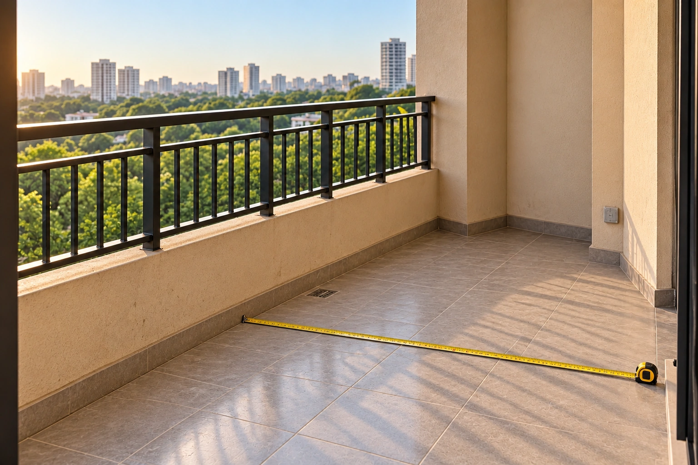
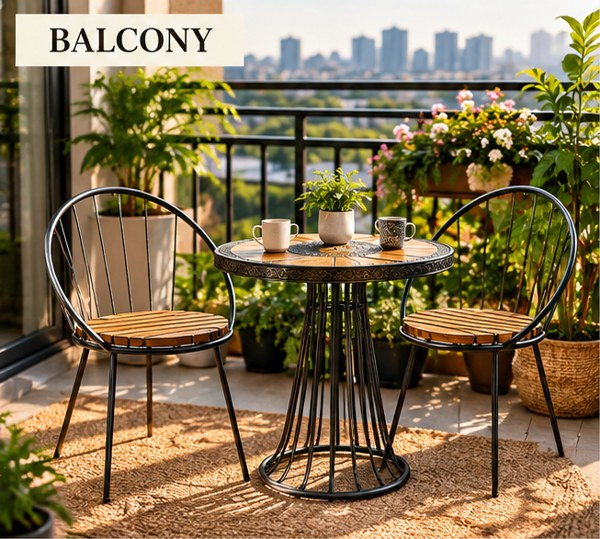
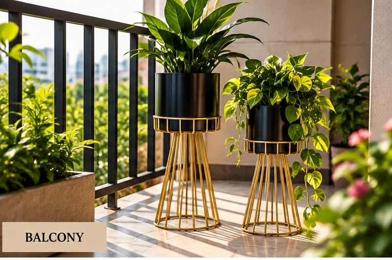
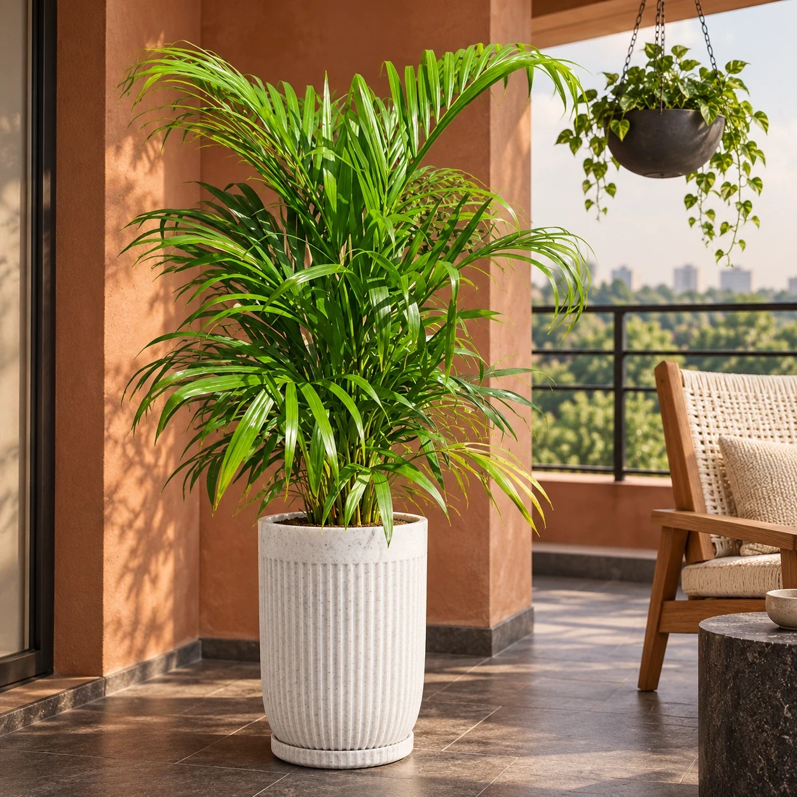
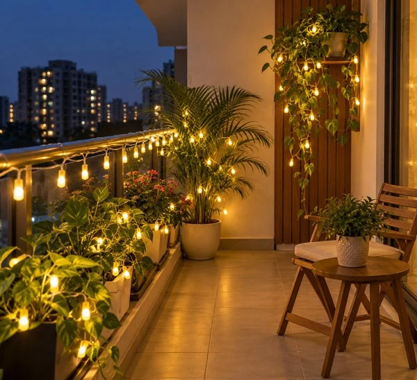
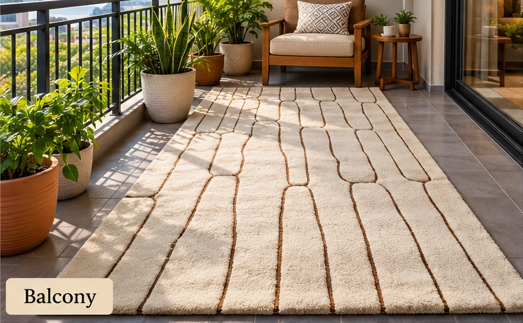
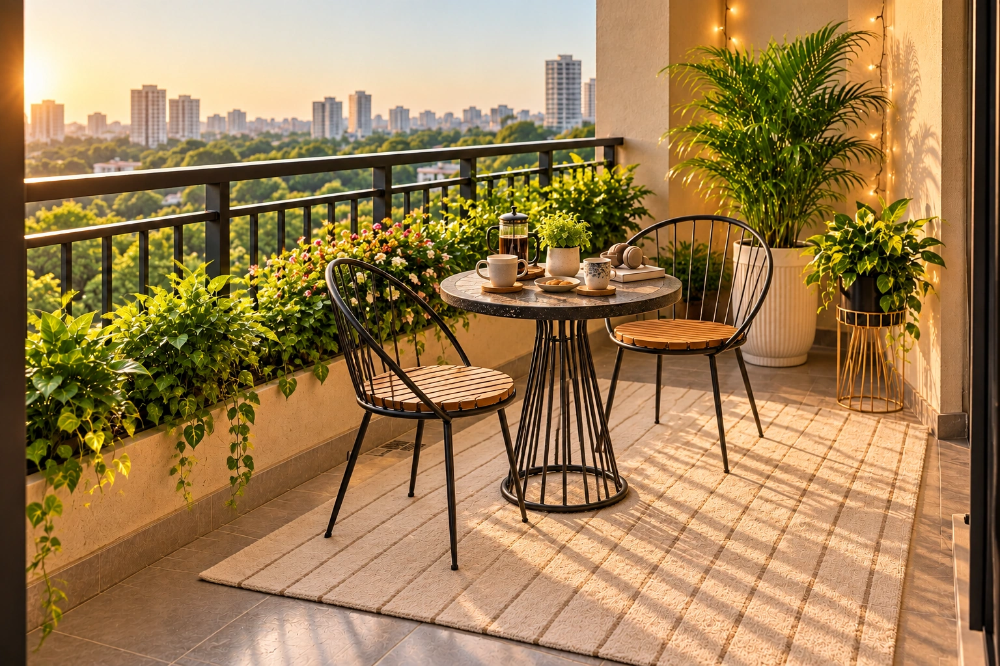

01
01Choose your balcony style
Explore our balcony templates and choose your favourite look. Share how you want to use the space and your planning budget.
Beyond the laundry rack is a morning chai ritual, a leafy reading nook, or your favourite table for two. Let’s find the balcony you’ve been missing.
Find my balcony personality ↗Take a look around ↓
01 It became a place to store things.
02 You have ideas, but no idea where to start.
03 A full renovation feels like too much.
Start with a purpose. Build a beautiful nook around it.
Seven feelings. Seven beautifully considered spaces.
Find the moment you want to make room for.
Seven signature designs inspired by our catalogue. Each image is an AI-created illustration; confirm product dimensions, finishes, weather suitability and placement for your own balcony.
From choosing your favourite balcony style to the final finishing touches, Balconia makes every step effortless. You dream it, we bring it to life.
Your Space. Your Style. Our Expertise.
01Explore our balcony templates and choose your favourite look. Share how you want to use the space and your planning budget.

02Upload a raw photo of your balcony. Measure the length and width, and tell us about sunlight, rain exposure and sockets so we can plan for your actual space.





We match products to your selected template, adapt the layout to your balcony and share an itemised quote. Review the product list and approve the plan before we begin.

04See your selected style visualised on your uploaded balcony photo. Once you approve the design and quote, our team delivers, installs and styles the agreed products.
Example journey shown: The Chai Club. AI-created before-and-after images demonstrate the process; these are not photographs of a completed customer installation. Your plan is tailored to your uploaded balcony photo and confirmed measurements.
Real plants bring a living, changing element to your home. Grow a pot of mint for your chai, watch a new leaf open, or simply enjoy a leafy view. Your design begins with how you want to use the space.
Each element earns its place.
Comfort, greenery and atmosphere come first.
Plants in beautiful pots, selected for the light, wind and care your balcony can support.
 Explore plants & pots ↗
Explore plants & pots ↗Fairy lights and hanging lights suited to the exposure and installed with a safe power plan.
 Explore lighting ↗
Explore lighting ↗Premium outdoor matting chosen with drainage, maintenance and weather in mind.
 Explore rugs & carpets ↗
Explore rugs & carpets ↗A compact table and chairs, or floor seating, with enough room to move comfortably.
 Explore tables & chairs ↗
Explore tables & chairs ↗Cushions, trays and decorative accents that bring the mood together without crowding the space.
 Explore decor ↗
Explore decor ↗Style inspiration shown above. Browse each category for exact product options.
Free online plant-care consultancy with our experts — our way of welcoming you to Balconia.
Request my free consultation ↗Inaugural offer: online plant-care consultation is free. Message us on WhatsApp to arrange a suitable time with our experts.
Tell us about your space and your everyday rituals. Get a personalised starting concept, practical fit notes and a brief you can keep.
No perfect balcony needed.
Just a little possibility.
“We only wanted a chai corner. The product list matched our budget and the AI preview convinced my husband.”Ananya S.Gurugram · The Chai Club
“Ordered DIY plants and lights. Packaging was careful — finally using the balcony every evening.”Rohit M.Delhi · DIY catalogue
“The quiz + fit notes stopped me from buying a huge chair. The reading nook feels calm, not crowded.”Meher K.Noida · One More Chapter
Balconia is an AI-powered balcony makeover company. We turn ordinary, unused balconies into green, beautiful spaces you'll actually want to spend time in.
We design and transform balconies using natural plants. You see your new balcony before we start, and we bring it to life quickly, without the usual cost and effort.
In most homes, the balcony is the most underused space. It's a hidden gem: with the right design, it can become a calm corner for your morning tea, a mini garden, or a place to unwind.
It doesn't have to be. Most options available today are costly, if you can find one at all. Balconia offers budget-friendly makeovers so more homes can enjoy a green balcony.
We use AI to instantly show you how your balcony could look after the makeover. You can see the design before any work begins, so there are no surprises.
Once you approve the design, we aim to complete the execution in a single day.
No. Gardening setups are usually labour- and time-intensive. Our team handles the work, so you get the result without the hassle.
We use natural plants, including oxygen-rich plants, herbs, and flowers. We can also set up space for growing your own organic vegetables.
Yes. We can design your balcony to grow organic vegetables and herbs, so you can enjoy fresh, home-grown produce.
We share guidance on your plants and balcony care, so you understand what you're growing and how to keep it healthy.
Friendly staff, on-time delivery, instant visualisation, one-day execution, and a makeover that brings you closer to nature.